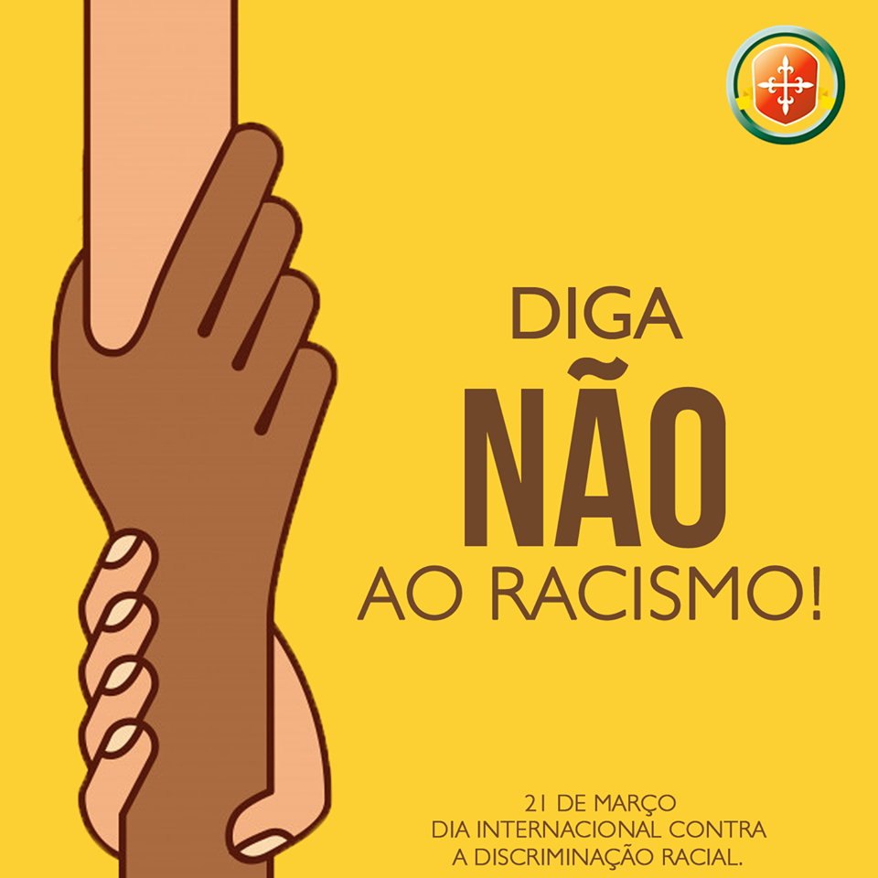
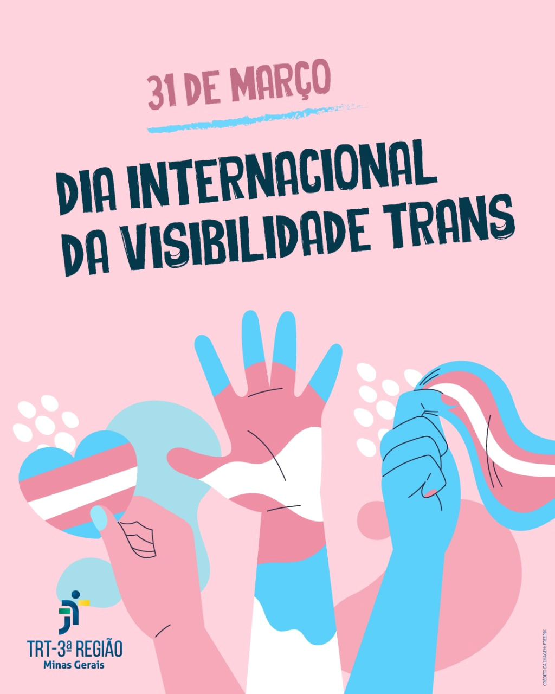
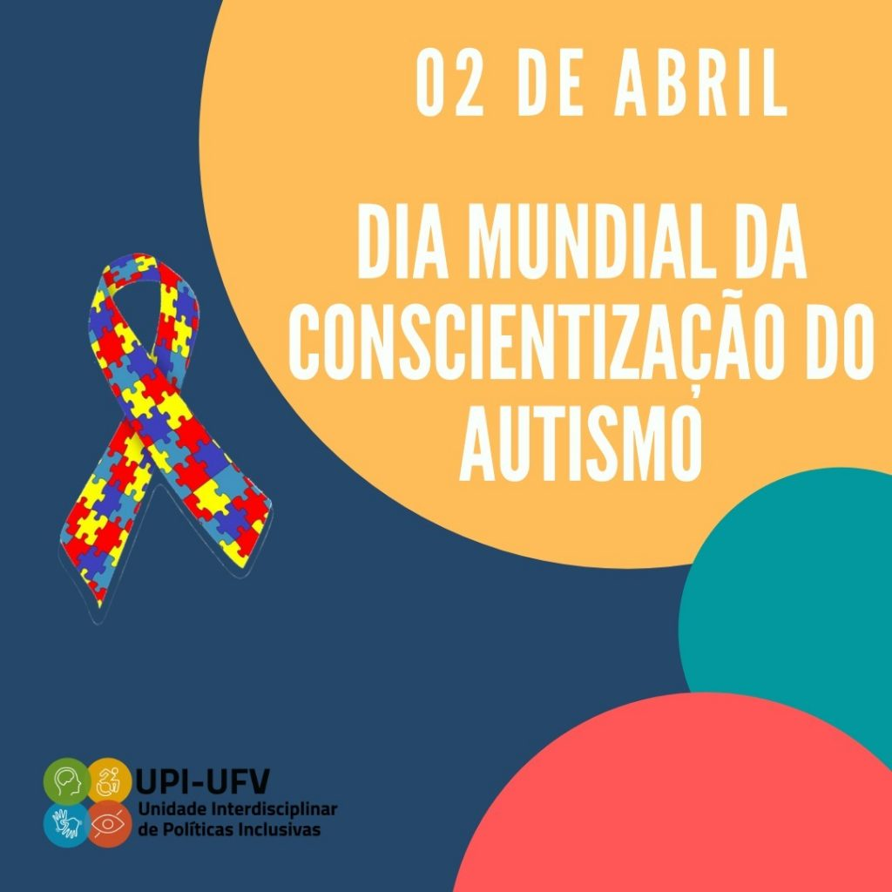
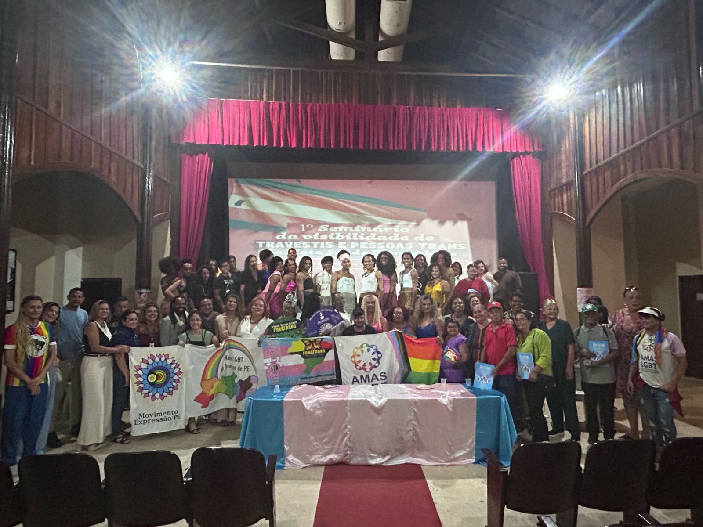
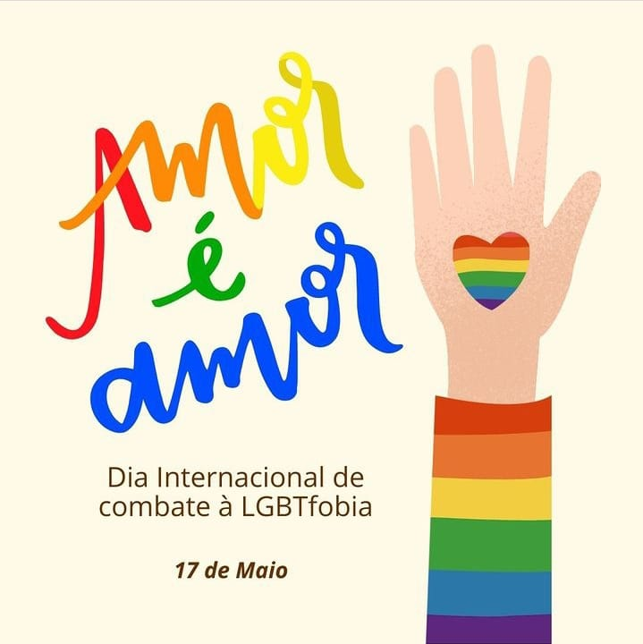
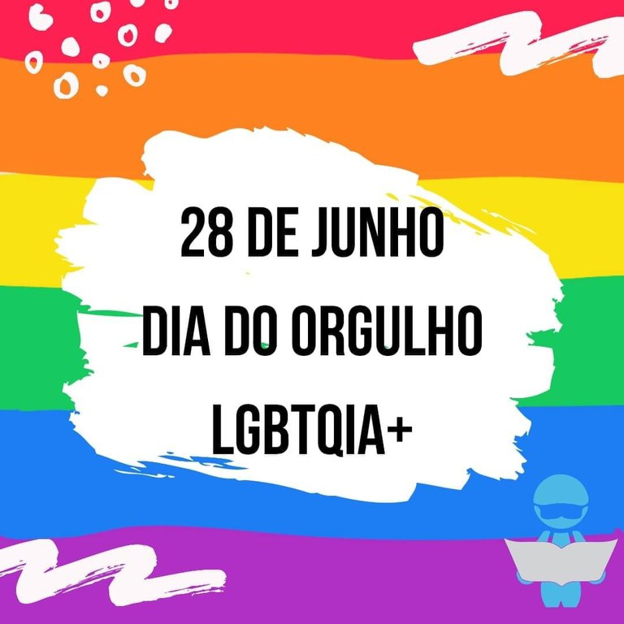
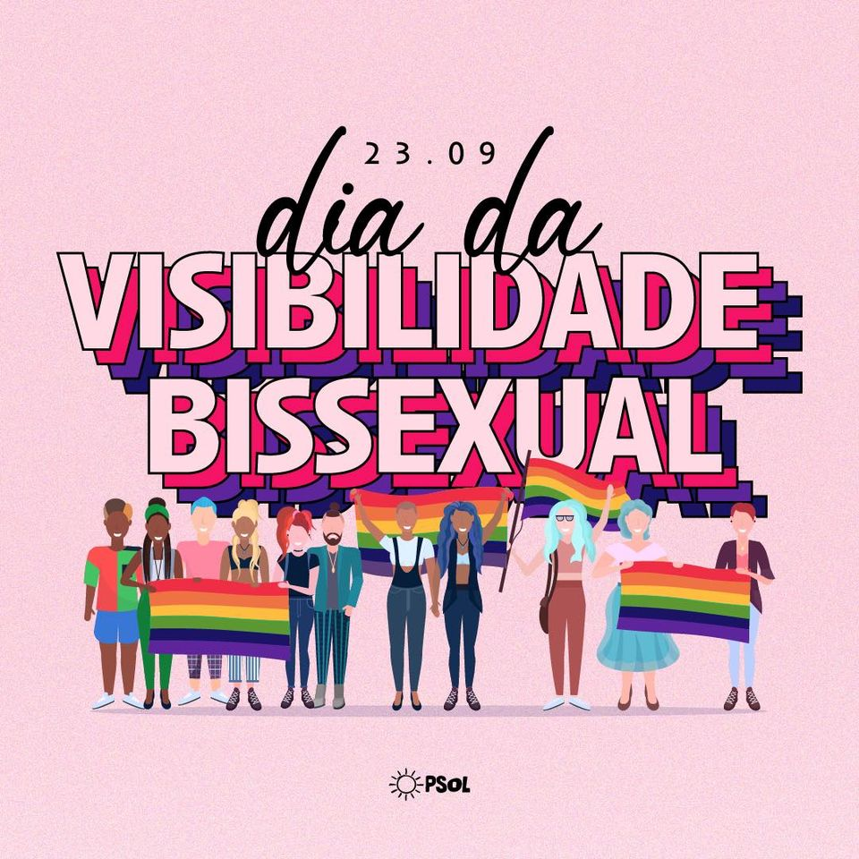
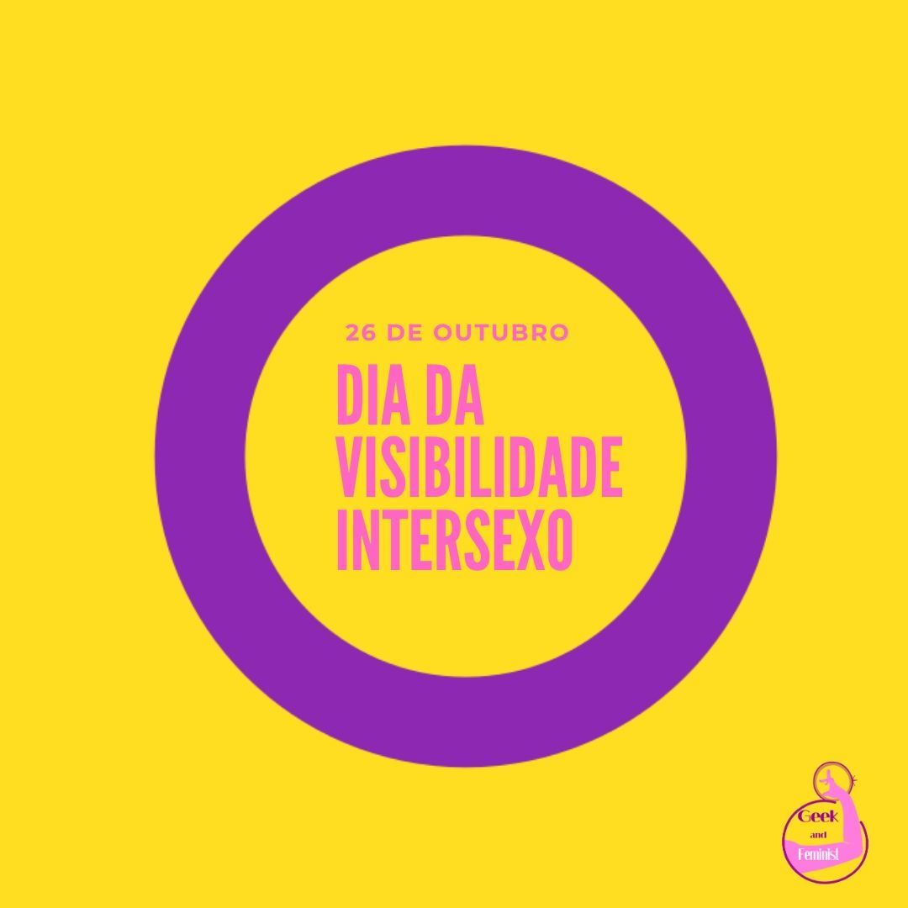
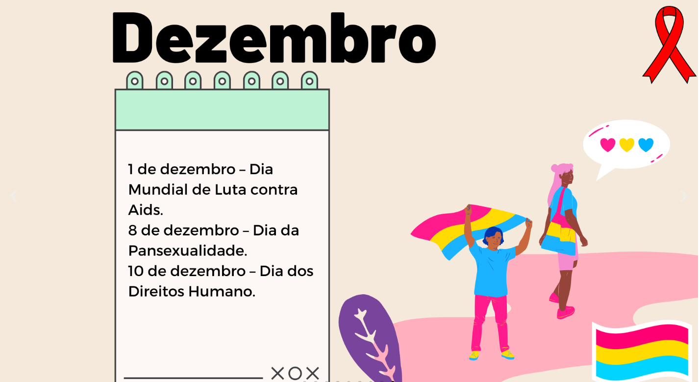

29 de janeiro – Dia Nacional da Visibilidade Trans
Destaca a luta e as conquistas das pessoas trans, promovendo sua visibilidade e reconhecimento. Instituído em 2004 após uma campanha com ativistas trans.

8 de março — Dia Internacional da Mulher
Reconhece a luta histórica das mulheres por equidade, direitos e liberdade.
21 de março – Dia Internacional da Síndrome de Down
Incentiva a inclusão, visibilidade e valorização das pessoas com síndrome de Down.
21 de março – Dia Internacional de Combate ao Racismo
Promove ações contra o racismo estrutural e a favor da equidade racial.
31 de março – Dia Internacional da Visibilidade Trans
Conscientiza sobre a importância de garantir os direitos e a dignidade das pessoas trans no mundo inteiro.
2 de abril – Dia da Conscientização do Autismo
Promove compreensão, aceitação e inclusão de pessoas autistas.
23 de abril — Aniversário de Fundação da AMAS LGBT
17 de maio – Dia Internacional de Combate à Homofobia
Reforça a luta contra a discriminação e a violência sofrida pela comunidade LGBTQIA+.
28 de junho – Dia Internacional do Orgulho LGBTQIA+
Celebra a diversidade e a resistência LGBTQIA+. Comemora a rebelião de Stonewall Inn (1969), marco histórico da luta por direitos.
29 de agosto – Dia Nacional da Visibilidade Lésbica
Valoriza e celebra a identidade e diversidade das mulheres lésbicas, promovendo respeito e inclusão.

23 de setembro – Dia da Visibilidade Bissexual
Busca o reconhecimento da identidade bissexual, combatendo preconceitos e fortalecendo a visibilidade.
26 de outubro – Dia da Visibilidade Intersexual
Reforça a diversidade corporal e a necessidade de respeitar os direitos das pessoas intersexo.
8 de novembro- Dia da Solidariedade Intersexual
Reforça a conscientização sobre a importância da aceitação e do respeito às pessoas intersexuais.

1 de dezembro – Dia Mundial de Luta contra Aids
Reforça a conscientização sobre prevenção, diagnóstico e o combate ao estigma do HIV/AIDS.
8 de dezembro – Dia da Pansexualidade
Celebra e reforça a conscientização sobre a identidade pansexual.
10 de dezembro – Dia dos Direitos Humanos
Celebra a dignidade humana e os direitos universais da pessoa.
